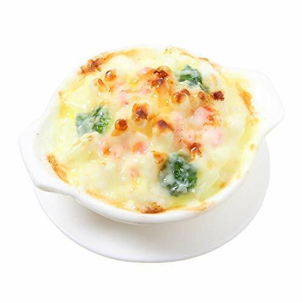

Home
Guratan

Description
Guratan (グラタン) is a Japanese-style gratin, a creamy, cheesy baked dish inspired by French cuisine. The dish typically consists of a béchamel sauce made from butter, flour, and milk, combined with ingredients like macaroni, seafood (such as shrimp or scallops), chicken, or vegetables like mushrooms and onions. This mixture is then transferred to a baking dish, topped with a generous layer of cheese—usually a blend of mozzarella, cheddar, or Parmesan—and baked until golden brown and bubbling. The result is a rich and comforting dish with a crispy, cheesy crust that contrasts with the creamy filling.
While Guratan shares similarities with Western gratins and casseroles, its flavors are often adapted to Japanese tastes. Some variations include adding miso or soy sauce for extra umami or using panko breadcrumbs for a crunchy topping. It is commonly served as a main dish alongside a simple salad or bread. Popular in home cooking and found in cafés and family restaurants across Japan, guratan is a beloved comfort food, especially during the colder months.
Ingredients
Main Ingredients:
- 200g seafood mix (shrimp, scallops, squid, or fish)
- 1/2 onion (thinly sliced)
- 1/2 cup mushrooms (shiitake, shimeji, or button mushrooms, sliced)
- 1 tbsp butter (for sautéing)
- 1 tbsp olive oil
- 1/2 tsp salt
- 1/4 tsp black pepper
White Sauce (Béchamel Sauce):
- 30g (2 tbsp) butter
- 2 tbsp all-purpose flour
- 1/2 cup heavy cream (optional for richer flavor)
- 1/2 tsp salt
- 1/4 tsp white pepper
- 1/4 tsp nutmeg (optional)
Additional Ingredients:
- 1/2 cup grated cheese (mozzarella, Gruyère, or a mix)
- 1/4 cup Parmesan cheese (for topping)
- 1/2 cup cooked macaroni or penne (optional, for pasta gratin)
- 1 tbsp panko breadcrumbs (for crunchy topping)
Step-by-step Cooking Guide
- Sauté ingredients: In a pan, heat butter and olive oil, then sauté onions, mushrooms, and seafood. Season with salt and pepper. (Add white wine if using.)
- Make white sauce: In another pan, melt butter, add flour, and stir. Gradually add warm milk while whisking until smooth. Add cream, salt, pepper, and nutmeg.
- Combine: Mix the cooked seafood with the white sauce. Add cooked pasta if making a gratin-style pasta.
- Assemble>: Transfer to a baking dish, sprinkle cheese and panko on top.
- Bake>: Bake at 200°C (400°F) for 10–15 minutes until golden and bubbly.